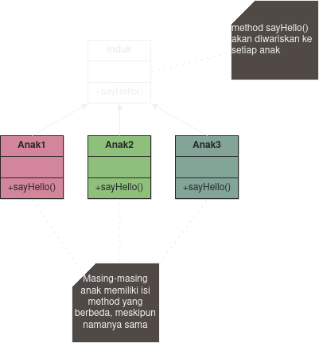
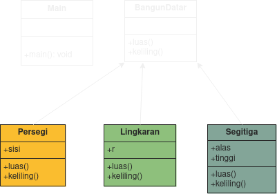
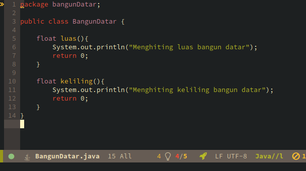
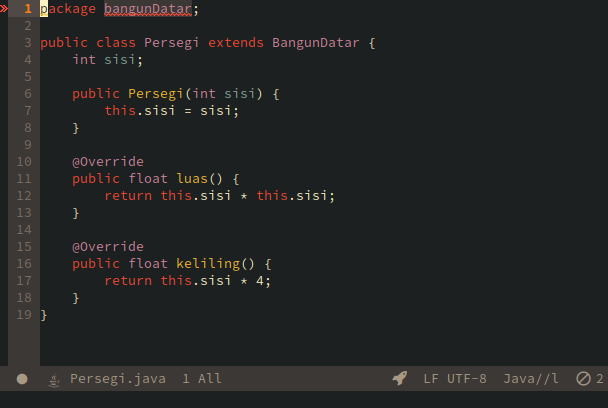
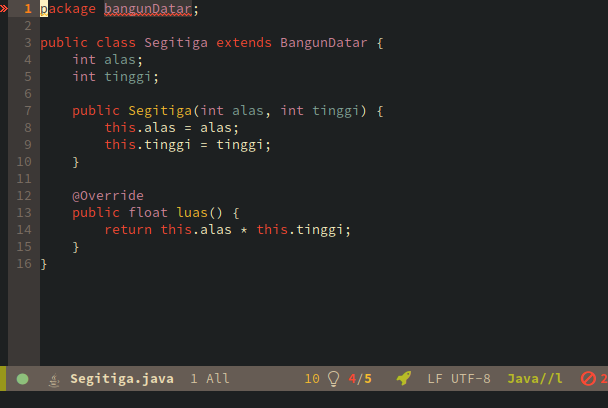
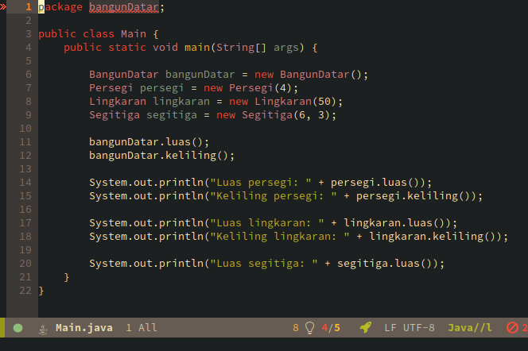
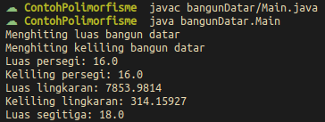

Oleh: Avrilian Briliansyah
Polimorfisme berarti banyak bentuk. Polimorfisme adalah salah satu konsep di java dimana sebuah method dapat memiliki banyak bentuk, menerima macam-macam tipe argumen, hingga menetapkan aksi tersendiri untuk masing-masing tipe argumen.
Di Java polimorfisme memiliki dua jenis:
Polimorfisme statis diperoleh dengan menggunakan method overloading, yaitu mendeklarasikan ulang suatu method yang sudah dideklarasikan di class yang sama, namun kali ini method dibuat menerima tipe argumen yang berbeda atau bertipe beda atau keduanya. Badan dari method bisa disesuaikan tergantung dari tipe parameter masing-masing.
Sedangkan polimorfisme dinamis menggunakan method overriding, yaitu dimana method yang diwariskan dari superclass ditindih dengan method baru yang menerima tipe argumen yang sama dengan tipe method yang sama. Badan dari method yang menindihi juga bisa disesuaikan.
Method overloading terjadi pada sebuah class yang memiliki nama method yang sama tapi memiliki parameter dan tipe data yang berbeda. Kata kunci yang perlu diingat:
Contohnya misalkan kita memiliki class Lingkaran.java. Pada class ini terdapat method luas(). Method luas() ini bisa saja memiliki parameter yang berbeda.
class Lingkaran {
// method menghiting luas dengan jari2
float luas(float r){
return (float) (Math.PI * r * r);
}
// method menghitung luas dengan diameter
double luas(double d) {
return (double) (1/4 * Math.PI * d);
}
}
Polimorfisme dinamis biasanya terjadi saat kita menggunakan pewarisan (inheritance) dan implementasi interface.
Dengan inheritance kita dapat mewariskan atribut dan method induk ke class keturunan.

Apabila method yang diwariskan dideklerasikan ulang dengan isi yang sama/berbeda di class anak maka yang terjadi adalah method baru ini akan menindihi method lama yang diwariskan dari induk.
Class anak akan memiliki nama method yang sama, tapi nanti isi dan parameternya bisa berbeda dari class induk.
Polimofirme dinamis juga bisa terjadi saat menggunakan interface.
Kesimpulan:
Perhatikan diagram berikut:

File: bangunDatar/BangunDatar.java

File: bangunDatar/Persegi.java

File: bangunDatar/Lingkaran.java

File: bangunDatar/Segitiga.java

File: bangunDatar/Main.java

Output:
